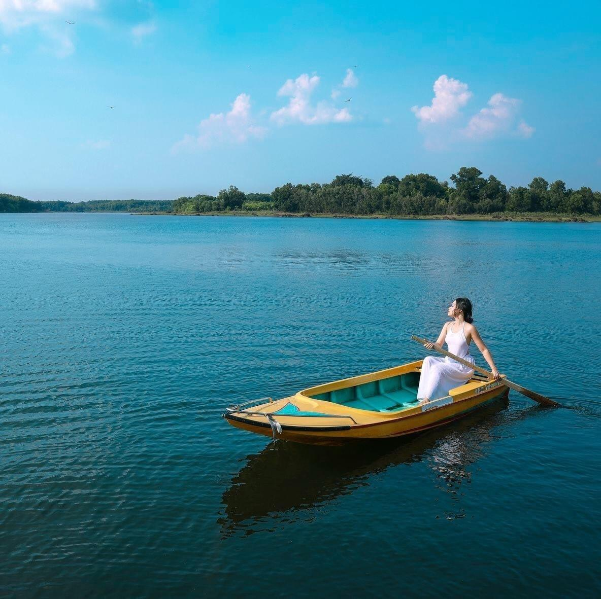
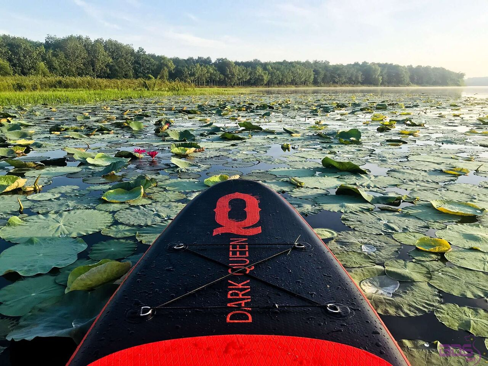
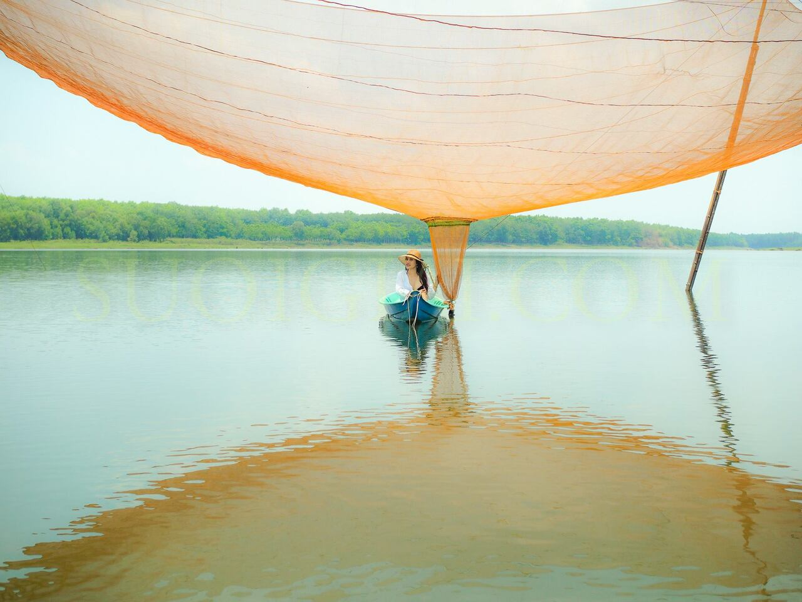
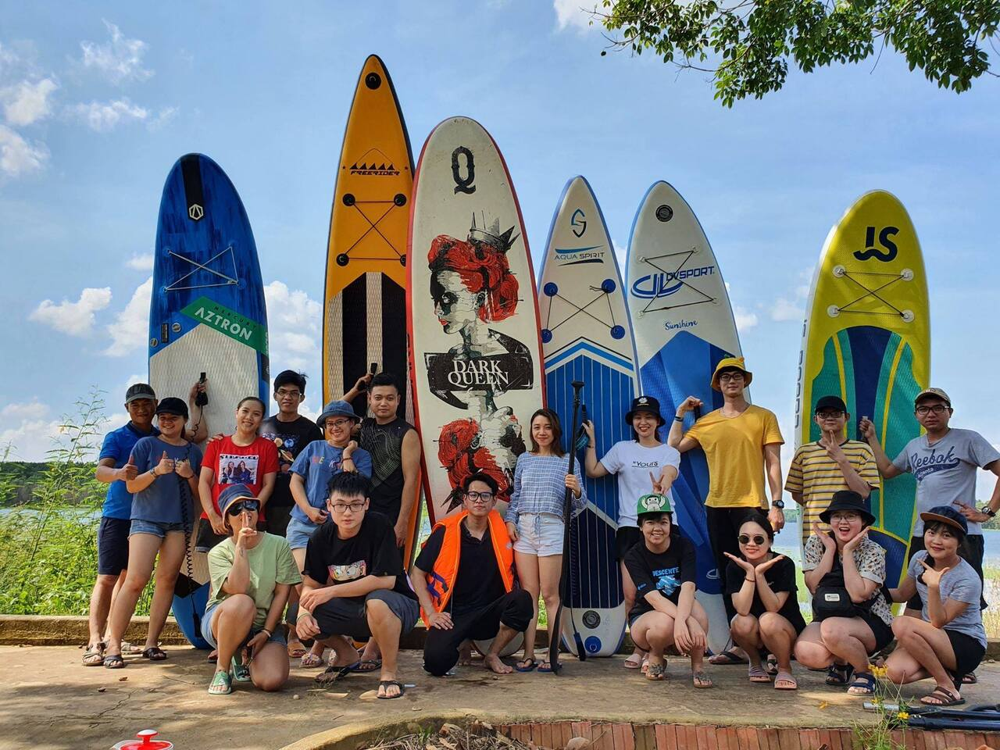

Hồ Suối Giai nằm ở địa phận xã Tân Lập, huyện Đồng Phú, tỉnh Bình Phước, cách trung tâm Sài Gòn khoảng 80km về phía Tây Bắc. Hồi xa xưa thì nơi đây là đầu nguồn của một dòng suối nhỏ, đến năm 1978 tỉnh Bình Phước cho xây dựng một con đập thủy lợi để trữ nước và cung cấp nước cho người dân địa phương. Kể từ đó thì Hồ Suối Giai được hình thành.
Làn cước trong hồ luôn mát rượi, sạch sẽ và trong veo. Đặc biệt vào mùa hè, cho dù sáng hay chiều thì nhiệt độ nước rất mát mẻ vào khoảng 30 độ C, tắm cực kỳ mát.
Hồ có độ sâu từ 8-10 mét, lòng hồ ít bùn đất nên nhiều bạn trẻ thường tìm đến đây để tham gia các hoạt động bơi lội, chèo ghe hay lưới cá. Mặt hồ phẳng lặng như gương, ít sóng nên bơi lội ở đây rất an toàn.
 Xung quanh hồ không có nhiều cư dân sinh sống, xung quanh hồ là những rừng cao su, trong lòng hồ có vài bè nuôi cá. Tại hồ chỉ có duy nhất một ngôi nhà được xây dựng và đầu tư để phục vụ du khách. Du khách có thể tham gia một số hoạt động ngoài trời như bơi lội, chèo thuyền, câu cá, đạp xe đạp…. Ở đây, du khách sẽ còn hài lòng với các món ăn đặc sản của địa phương vô cùng thơm ngon và hấp dẫn. Đặc biệt, đối với những du khách mê chụp ảnh thì hồ Suối Giai sẽ mang đến cho bạn những tấm ảnh tuyệt vời với khung cảnh nhẹ nhàng, bình yên nhưng lại vô cùng ấn tượng.
